| 日付 | 2012年1月3日（火） |
|---|---|
| メンバー | 家族（妻、長女・0歳、両親、姉一家） |
| アクセス | 車 |
元旦に初詣に行ったが、3日にも岡寺に行ってみることにする。
岡寺の仁王門に到着。辺りは人が多く、賑わっている。

仁王門の金剛力士像。立派な像だが金網が邪魔だ。
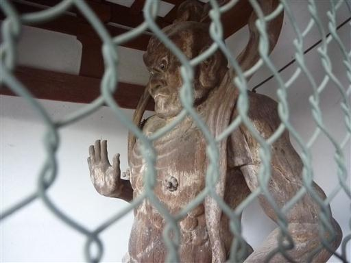
橿原神宮に比べると質素な手洗い場。
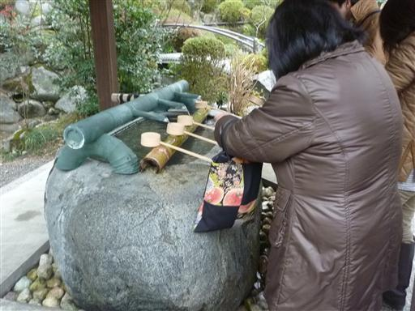
まるで城壁のように石垣が聳えている。
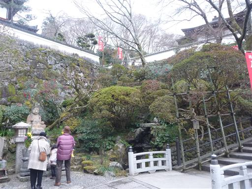
小さな庭がつくられている。
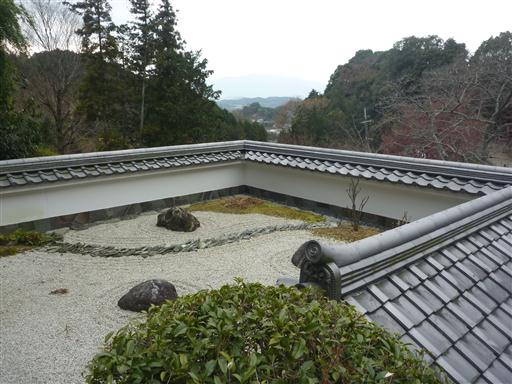
本堂に到着。
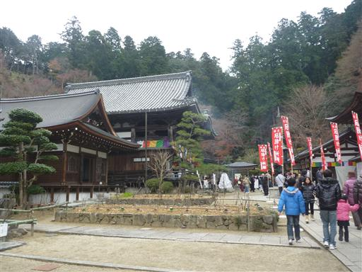
本堂の中は厳かな雰囲気だ。
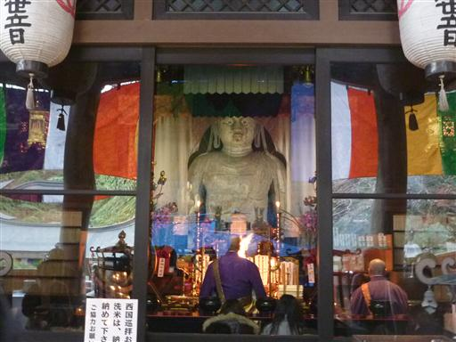
賓頭盧尊者。自分の体の悪いところを撫でると良いらしい。
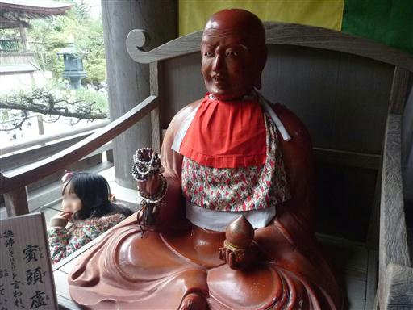
本殿の奥に道が続いていて、辺りをぐるっと一周できるようになっている。
せっかくなので、少し歩いてみることにする。
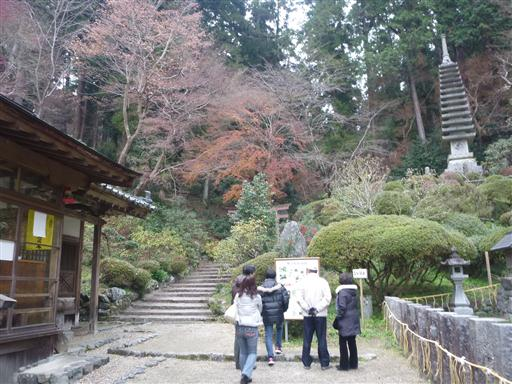
赤い鳥居をくぐって先に進む。
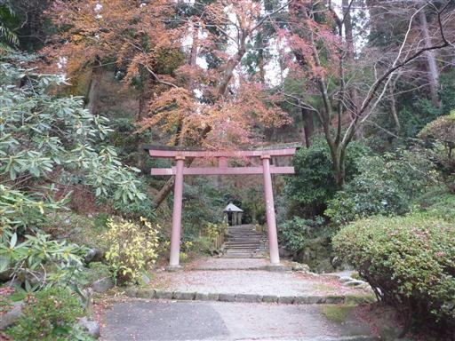
見上げると十三重石塔が建っている。
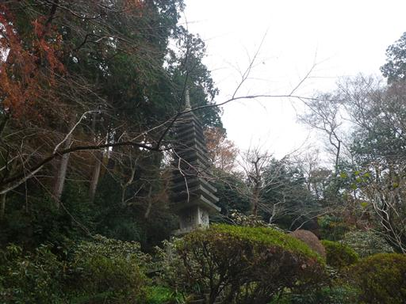
道の脇に井戸がある。
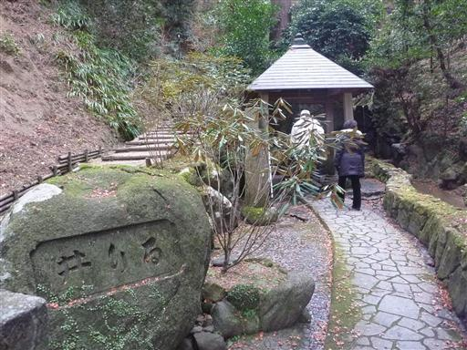
中を覗くと、水を湛えている。試しに一杯水を汲んでみる。
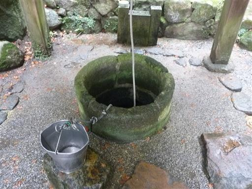
稲荷社に到着。両脇にひかえているのは狐の狛犬だ。
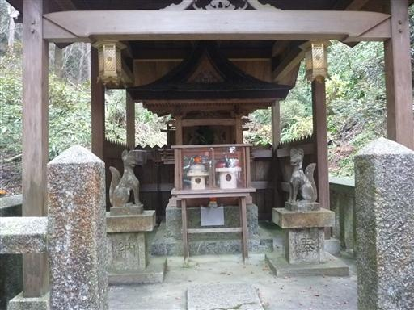
奥ノ院の石窟。中に入れるようになっている。
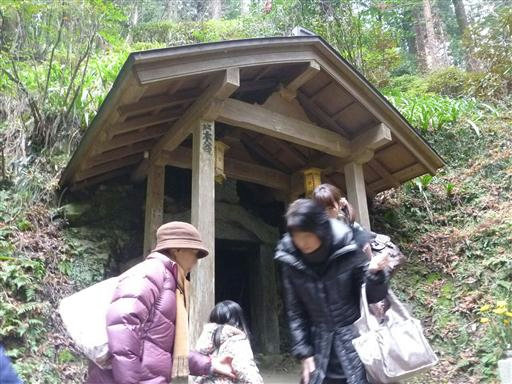
内部は暗くてほとんど何も見えない。よく見ると小さな石仏が祀られている。
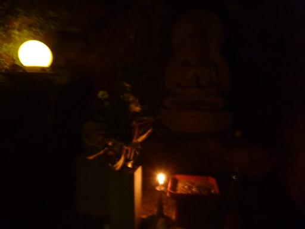
この寺はシャクナゲが有名なようだ。
道の両脇にはシャクナゲの木が茂っているが、当然この時期に花は咲いていない。
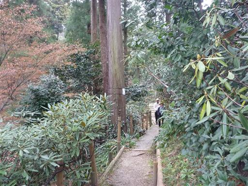
この寺を創建した義淵僧正の廟。
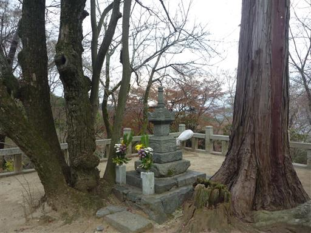
三重塔。1986年に再建された新しい建物だ。

ここからの眺めはすばらしい。天気が良くないのが残念だ。
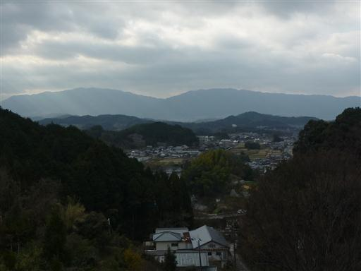
鐘楼堂。鐘を突くのに順番待ちだ。
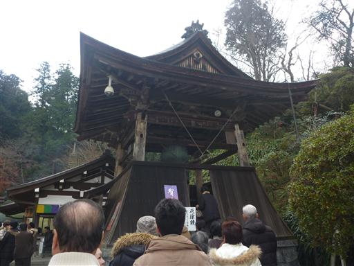
鐘を突く。大きな鐘でなかなかいい音だ。

岡寺を後にする。
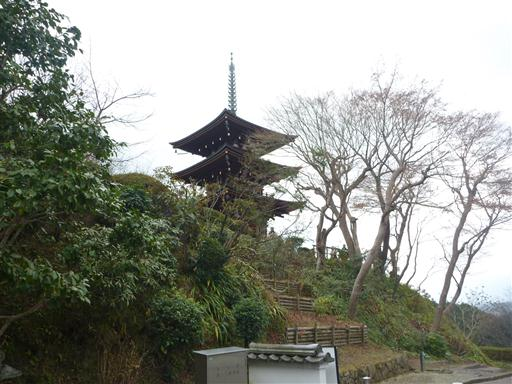
帰るにはまだ早いので、石舞台古墳に寄っていくことにする。
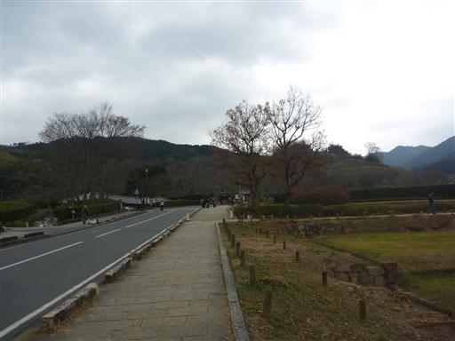
石舞台古墳。巨大な石が積み上げられている。
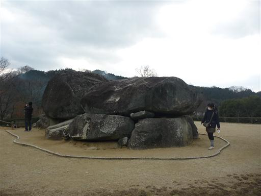
中は空洞になっていて、入れるようになっている。
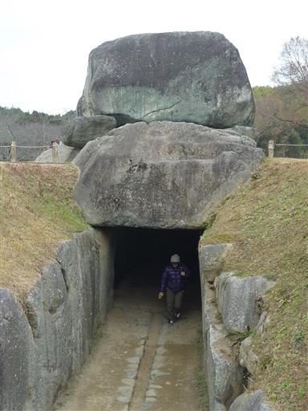
巨大な石に囲まれた空間。
埋葬者は蘇我馬子と伝えられているが、はっきりとは分かっていないらしい。

石棺の模型。
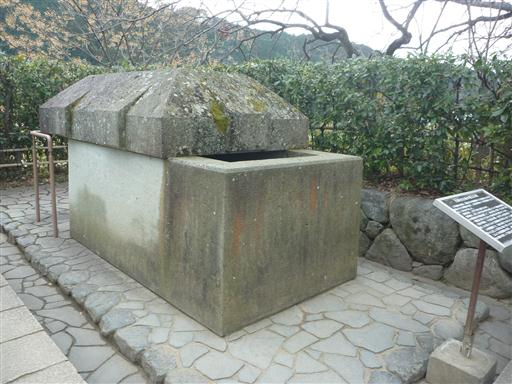
石舞台古墳を後にする。近くの店でお汁粉を食べて帰宅する。
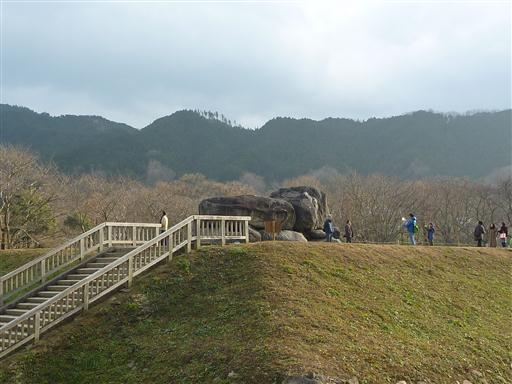